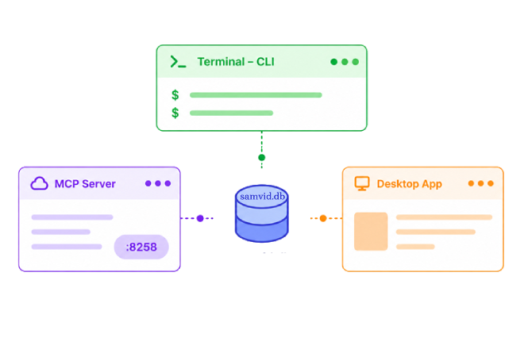

Give your AI a memory
that actually lasts.
AI without memory is a river that forgets its source.
Samvid lets every experience leave an imprint. Memories gather. Connections deepens. Meaning unfolds. Beneath the surface, semantic recall acts like a subconscious mind, bringing the right context at the right moment.
What begins as conversation becomes understanding.
What begins as data becomes memory.
Dashboard
Vector memory & knowledge management analytics
- project486
- work328
- personal214
- research148
AI
forgets everything.
You spend an hour with your AI up to speed. It finally understands. Close the window. Tomorrow you reopen it, blank 😑. Like the conversation never happened.
Samvid Memory Studio fixes that. One install gives every AI on your device a shared, persistent memory. Walk away. Come back months later. It remembers everything.
/db/migrations.Any AI agents.
One brain.
Every tool is an island. Cursor doesn't know what Claude decided. Claude doesn't know what Codex learned. Every session starts from zero — until now.
Desktop
IDE
IDE
IDE
CLI
CLI
Agent
MCP client
16 ways to remember.
A rule isn't a preference. A goal isn't a plan. Each memory gets the shape it deserves.
A knowledge graph,
not a list of facts.
Memories don't sit in isolation. They link to each other, supporting, contradicting, or replacing what came before. The graph grows smarter every time your AI reasons.
prevents, blocks, is_a, part_of, instance_of.Memories fade.
Important ones don't.
Not all memories are equal. The ones which is often used, stay sharp. The rest quietly fade, unless you mark them as important.
Memories with importance ≥ 0.9 are always protected, no matter their age. Everything else decays on a curve you control.
Set a TTL for things you want to forget on purpose: "remember this for one week". Or let natural decay handle the rest, just like human memory.
Four operations.
Zero maintenance.
Your memory store stays lean as it grows. Every operation is the same whether your AI triggers it, you run it from the desktop app, or script it from the command line.
Drop stale memories
Deletes memories below a configurable effective-importance threshold. Importance ≥ 0.9 is always preserved.
Reclaim disk
Removes TTL-expired memories to reclaim disk space. No vector recomputation needed.
Merge duplicates
Finds near-duplicate memories via cosine distance and merges them. Dry-run first.
Batch summarize
Send raw memories through an LLM. Stored as a new summary; sources downgraded.
Conversations you can
replay.
Every session tells a story. Memories chain together in order, replay any conversation from start to finish.
Your AI understands automatically and picks up exactly where you left off. No more reminding it what happened yesterday.
Long sessions are automatically chunked. Fifty sessions or five, always readable, always replayable.
[18:30] Making pizza tonight. Dough is ready, stretched it to 12 inches on a floured surface. [18:40] Sauce is crushed tomatoes with a pinch of salt, nothing else. Simplicity wins. [18:50] Toppings — fresh mozzarella, oregano, a drizzle of olive oil. Oven preheated to 250°C. [19:00] 8 minutes on the oven. Golden crust, bubbling cheese. Done.
20 tools.
Three ways to use them.
Samvid speaks MCP for AI agents, ships a full CLI for scripts, and includes a polished desktop app for humans. One database. Three surfaces. Same memory everywhere.

MCP Server
All 20 tools exposed over the Model Context Protocol. Any MCP-compatible client connects to Samvid Memory Studio.
- Zero-config auto-discovery
- Vector + keyword hybrid search
- Real-time memory access
Command Line
18 subcommands with structured JSON output. Pipe into any shell, CI pipeline, or cron job.
- Machine-readable JSON
- Batch import and export
- Dry-run previews
Desktop App
8-page GUI with dashboard, search, sessions, and full lifecycle controls. Cross-platform.
- Dark and light themes
- System tray, always available
- Export and backup
Everything you need, nothing in the way
Always in your tray, never in your way. Open it to browse your AI's memory; close it and carry on — it works silently in the background.
Dashboard
Memory counts, session activity, namespace breakdown, database size — at a glance.
Memories
Browse, search, edit, and delete every memory. Filter by type, namespace, or importance.
Sessions
Replay an entire conversation as a single timeline. Walk through it chronologically.
Lifecycle
Consolidate duplicates, forget stale ones, compact the database.
Namespaces
Keep work, personal, and side projects separate. Memories stay organized by topic.
Export
Move memories between machines. JSON in, JSON out. Your data travels with you.
Built so you don't have to think about it
Find things by meaning, not keywords.
Ask what was the bug from last Tuesday? and Samvid Memory Studio finds it. The search understands intent, not just text matches.
- Vector + keyword hybrid ranking
- Auto-graded relevance scores
- Progressive fallback for empty queries
Use JWT with refresh tokens stored in httpOnly cookies. Rotate keys every 30 days.
Auth refactor session — Mar 14. Walked through tradeoffs, decided against session cookies for the public API.
Strong preference for short-lived access tokens, longer-lived refresh tokens.
Your data. Your device. Your call.
Everything lives on your machine. No cloud. No account. No one watching. It works quietly in the background — your data belongs to you.
- On device local memory
- Survives app updates and uninstalls
- Export to JSON anytime
Quick answers
Does my data ever leave my computer?
No. Everything runs locally. A single file on your disk. No accounts, no telemetry, no cloud.
Which AI tools work with Samvid?
Any tool supporting the Model Context Protocol — Claude Desktop, Cursor, VS Code, Codex, OpenCode, and more.
Can I control what gets remembered?
Yes. You decide what stays and what goes. Delete any memory anytime — your AI's knowledge stays under your control.
How is this different from saving chat history?
Chat history is a flat log. Samvid connects ideas across tools and sessions, surfacing relevant context when it's needed — not when you remember to scroll back.
How does my AI know how to use Samvid's tools?
Once your AI tool like Cursor, VS Code, Claude Code, or any MCP client is connected, Samvid Memory Studio instantly provides all 20 memory tools. Your AI automatically decides what to store, what to remember, when to search, and which context to surface — no training, no setup, just memory that works.
How do I connect my AI to Samvid?
Add this snippet to your AI tool's MCP config. Every compatible tool connects the same way, set it once and it works everywhere.
{
"mcpServers": {
"samvid": {
"type": "http",
"url": "http://127.0.0.1:8258/mcp"
}
}
}What happens if I uninstall?
Your memory survives uninstall. Reinstall and everything picks up where you left off. Export to JSON anytime for full portability.
Download Samvid.
Free. No account needed.
Looking for older versions ? See all releases →